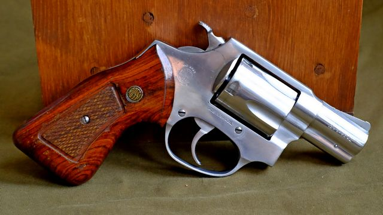

Od zera do rewolwera
O broni palnej i strzelectwie – po ludzku i bez zadęcia
Pozwolenie na broń krok po kroku
Jaki rewolwer kupić – przegląd producentów
12 lutego 2021
tekst i zdjęcia: Mikołaj Bartnicki
Rewolwery Chiappa Regulator, Alfa 2261, Taurus 65 oraz Chiappa Rhino
Decydując się na kupno nowego rewolweru, nie masz zbyt dużego wyboru. Jest tylko kilku producentów, których rewolwery są dostępne w polskich sklepach. Oto ich pobieżna charakterystyka, w zgrubnej kolejności od najbardziej do najmniej znanych.
- Wstęp
- Smith & Wesson
- Ruger
- Taurus
- Alfa-Proj
- Chiappa
- Kimber
- Weihrauch/Arminius
- Uberti, Pietta
- Rewolwery używane
Wstęp
Na początku krótkie wyjaśnienie, żeby nie było najmniejszych wątpliwości: wszystkie przedstawione tu opinie opieram na moich własnych doświadczeniach kolekcjonera rewolwerów. Z wyjątkiem dwóch ostatnich na liście, posiadam lub posiadałem na własność rewolwer od każdego z wymienionych tu producentów; w znacznej części przypadków więcej niż jeden egzemplarz. Ze wszystkich regularnie strzelam. Mam zatem podstawy aby pokusić się o pewną opinię porównawczą.
Jeśli koniecznie chcesz wiedzieć, który marka rewolwerów jest moją ulubioną, to nie jest to żadną tajemnicą: najbardziej cenię rewolwery Ruger.
Co prawda na końcu wspominam krótko o używanych rewolwerach, ale artykuł w założeniu traktuje o rewolwerach nowych. Rynek broni używanej to ruletka: wczoraj miałeś szczęście i trafiłeś na dobrą okazję; jutro masz pecha i nic sensownego nie możesz znaleźć.
Nie jest też moim celem stworzenie szczegółowych monografii każdej istniejącej na świecie marki rewolwerów. Przedstawiam natomiast podstawowy przegląd najważniejszych producentów, ze świadomym pominięciem rewolwerów skrajnie egzotycznych (Manurhin), ekstremalnie drogich (Korth) lub prawie niespotykanych w naszych sklepach (Colt). Ich udział na polskim rynku jest zupełnie marginalny.
Dobra, założenia wyraziłem dość jasno, a jak ktoś ich nie rozumie – to trudno. Resztę zapraszam. Jedziemy!
Smith & Wesson
Stany Zjednoczone
smith-wesson.com
Rewolwer Smith & Wesson 617 .22 Long Rifle, widoczne gniazdo kluczyka blokady
Amerykańska firma, która w swoich fabrykach produkuje rewolwery już od połowy XIX wieku. Rewolwery te zawsze były starannie wykonane i trwałe na pokolenia. Podobnie jak Colt, marka Smith & Wesson była niegdyś synonimem rewolweru w równym stopniu co marka Adidas – synonimem sportowego obuwia.
Dirty Harry strzelał z rewolweru Smith & Wesson 29; jest on produkowany do dzisiaj. Bywa w polskich sklepach, możesz go mieć za nieco ponad sześć tysięcy złotych.
Niestety to już przeszłość. Obecnie produkowane rewolwery Smith & Wesson, po swoich znakomitych przodkach odziedziczyły wyłącznie wysoką cenę – kwoty zaczynają się od czterech i pół tysiąca złotych. Natomiast bylejakością mogą śmiało konkurować z marką Norinco, będąca wzorcowym przykładem chińskiej tandety. Niestaranne spasowanie, błędy wykończenia, archaiczne rozwiązania konstrukcyjne, luźne i krzywe przyrządy celownicze – oto ich dzisiejszy standard jakości.
Na domiar złego, obecnie produkowane smith & wessony mają integralną blokadę mechanizmu spustowo-kurkowego, obsługiwaną kluczykiem. Nikomu niepotrzebne rozwiązanie nieistniejącego problemu, wymuszone durnowatymi przepisami obowiązującymi w części Stanów Zjednoczonych.
Natomiast pochwalić trzeba znakomite działanie spustu w smith & wessonach: jest on kanonicznym wzorcem precyzji, do którego należy porównywać spusty każdej innej broni. Nie zmienia to jednak faktu, że z dawnego Smith & Wessona pozostały jedynie legenda i wysoka cena.
Czy to oznacza, że nie warto kupować nowych smith & wessonów? Nie! To wciąż są trwałe, solidne konstrukcje, tylko z kiepską kontrolą jakości. Zanim więc wyciągniesz w sklepie portfel i promesę, koniecznie obejrzyj kilka sztuk wybranego modelu. Trzeba starannie wybrać, bo poszczególne egzemplarze mogą znacznie różnić się między sobą wykonaniem.
Smith & Wesson ma w ofercie serię produkcyjną broni o sportowych ambicjach, oznaczoną jako Performance Center. Rewolwery z tej serii wykonane są doskonale. Są także znacznie droższe.
Ruger
Stany Zjednoczone
ruger.com
Rewolwer Ruger Super Redhawk .44 Magnum
Amerykański producent, który wciąż pozostaje w cieniu marki Smith & Wesson, choć nie do końca słusznie. Półka cenowa ta sama – na dzień dobry trzeba mieć prawie pięć tysięcy złotych, a mowa tutaj o najtańszych modelach.
Z powodu swojej grubej, masywnej budowy, rewolwery Ruger uchodzą za trwalsze od rewolwerów Smith & Wesson. Z pewnością nie są delikatne, ale opinie o ich rzekomej większej trwałości nie mają umocowania w faktach. Konstrukcje Rugera są odlewane, stąd aby zachować wymaganą wytrzymałość, z konieczności są bardziej masywne niż kute rewolwery Smith & Wesson, a to daje wrażenie większej wytrzymałości konstrukcji. W rzeczywistości, rewolwery obu tych producentów są w równym stopniu nie do zajechania i z pewnością będą służyć nie tylko tobie, ale także twoim dzieciom i wnukom.
Rewolwery Ruger nie mają tej durnowatej blokady na kluczyk znanej ze smith & wessonów, co uważam za ich istotną przewagę. Są jednak wykonane równie niestarannie.
Niestety rewolwery Ruger są w Polsce trudno dostępne. Ich dystrybutor jest taki sobie, więc rzadko bywają w sklepach; a gdy już są, to wybór dostępnych modeli jest niewielki i stosunkowo szybko znikają one ze sklepowych półek.
Taurus
Brazylia
taurusarmas.com.br
Rewolwer Taurus 689 .357 Magnum
Brazylijski producent broni palnej, mający w ofercie dobre i względnie tanie rewolwery. Kiedyś wytwarzał mniej lub bardziej wierne kopie rewolwerów Smith & Wesson, obecnie oferuje swoje własne konstrukcje. W mojej ocenie, rewolwery Taurus są w bardzo ładne – większość z nich swoją urodą kasuje konkurencję.
Jednak ich niewątpliwie ważniejszą zaletą jest cena, istotnie niższa niż w przypadku rugerów oraz smith & wessonów. Większość modeli kosztuje około trzech i pół tysiąca złotych, ale czasami pojawiają się modele nawet za mniej niż dwa i pół tysiąca. Kupując taurusa opuszczamy zatem rewolwerową drożyznę i wchodzimy w obszar cen przeciętnych pistoletów.
Rewolwery Taurus uchodzą za gorsze niż rewolwery Smith & Wesson oraz Ruger. Czy słusznie? Raczej nie. To fakt, że wykonane bywają byle jak – ale tutaj podobnie jak w przypadku smith & wessonów, wszystko zależy od konkretnego egzemplarza. Trzeba też wziąć poprawkę na ich niższą cenę – coś za coś.
Taurusy nie mają spustów równie precyzyjnych jak smith & wessony, co nie znaczy, że mają spusty złe. Działają prawidłowo i strzelają celnie, a to jest przecież najważniejsze.
Większość obecnie produkowanych taurusów ma fabrycznie wbudowaną integralną blokadę na kluczyk – podobny idiotyzm co w rewolwerach Smith & Wesson. Na szczęście bywają też (niestety nieliczne) modele bez tej blokady.
W ogólnym rozrachunku, rewolwery Taurus uważam za przyzwoite i szczerze je polecam.
Alfa-Proj
Czechy
alfa-proj.cz
Rewolwer Alfa Stainless 3541 .357 Magnum
Czeski producent rewolwerów. Tak, to nie przejęzyczenie: Czesi produkują swoje rewolwery. A tak właściwie to rewolwer, bo w rzeczywistości jest to wiele różnych wariantów tej samej konstrukcji. Poza kalibrem i długością lufy, różnią się one między sobą tylko kosmetycznymi szczegółami. Szkielet i mechanizm pozostają jednak bez zmian.
Rewolwery Alfa-Proj są łatwo dostępne w sklepach i są naprawdę tanie, bo nową alfę z drewnianą rękojeścią możesz mieć już za niecałe dwa tysiące złotych. Ta niska cena nie bierze się znikąd – alfy mają pewne uproszczenia konstrukcji charakterystyczne raczej dla rewolwerów hukowych, a nie dla broni palnej.
Powyższe stało się przyczyną powszechnej opinii, jakoby rewolwery Alfa-Proj były nietrwałe, awaryjne i w ogóle nic nie warte. Powiedzmy jednak jasno: te radykalne mądrości ludowe zwykle wygłaszane są przez przemądrzałych nudziarzy, chcących uzasadnić zakup swoich smith & wessonów, na które wydali majątek, płacąc głównie za ambitny napis na lufie. Fakty są natomiast takie, że rewolwery Alfa-Proj to ¾ jakości swoich amerykańskich konkurentów, ale za ½ ich ceny.
Mimo wspomnianej prostoty konstrukcji, rewolwery Alfa-Proj działają bez zarzutu i strzelają celnie. Co więcej, są wykonane naprawdę starannie – bez dwóch zdań lepiej niż smith & wessony, rugery czy taurusy.
Godny pochwały jest też kontakt e-mailowy z producentem – łatwo się dogadać, odpisują szybko i konkretnie. Trochę głupio chwalić za coś, co powinno być standardem, ale porównajmy do innych producentów: kontakt z Taurusem jest kiepski – coś tam niby odpowiadają, ale późno i nie na temat; natomiast kontakt ze Smith & Wessonem lub Rugerem po prostu nie istnieje – e-maile z Polski są przez nich ignorowane, znikają niczym w czarnej dziurze.
Jeśli marzysz o rewolwerze (słusznie!) ale nie masz za dużo kasy, to spokojnie bierz alfę i nie oglądaj się na nikogo.
Chiappa
Włochy
chiappafirearms.com
Rewolwer Chiappa Rhino .357 Magnum
Włoski producent słynący właściwie tylko ze swego jedynego flagowego produktu: dziwacznego rewolweru Rhino.
Prawidłowa wymowa nazwy Chiappa brzmi: Kiappa
. Dyrektor generalny fabryki, pan Rino Chiappa, z pewnością obraziłby się słysząc Cziapa
lub Ciapa
.
Rhino to wyjątkowe dziwadło: rewolwer z ukrytym kurkiem, strzelający z dolnej komory sześciokątnego bębna. Występuje w różnych wariantach długości lufy oraz wykończenia powierzchni. Wykonany jest pod każdym względem perfekcyjnie i równie perfekcyjnie strzela.
Ponieważ na Rhino trzeba wydać około pięciu tysięcy złotych, nie jest to najtańszy wybór. Ze względu na skomplikowanie mechanizmu, nie jest on też pewnie najtrwalszy, choć będę mógł to powiedzieć dopiero za kilka lat, gdy mój egzemplarz zacznie bądź nie zacznie szwankować. Trzeba jednak przyznać, że posiadanie Rhino to szpan niesamowity.
Chiappa produkuje także model Regulator. Jest on niskobudżetową, dość kiepską kopią rewolweru Colt Cattleman (1873 Single Action Army). Jedyną zaletą Regulatora jest jego niewielka cena – to chyba najtańszy rewolwer dostępny na polskim rynku.
Kimber
Stany Zjednoczone
kimberamerica.com
Rewolwer Kimber K6s .357 Magnum
Wracamy do Stanów Zjednoczonych. Kilka lat temu, Kimber otworzył z kopa drzwi do rynku rewolwerów, wypuszczając model K6s. To nietypowy rewolwer kompaktowy: mieszczące się na dłoni maleństwo z dwucalową lufą, strzelające wyłącznie z samonapinaniem ukrytego wewnątrz kurka. Żeby było jeszcze ciekawiej, K6s strzela amunicją .357 Magnum.
Ciężko celnie strzelać z tego wynalazku. Rękojeść jest mała i niezbyt wygodna, spust ma długi skok i bardzo duży opór, zaś przyrządy celownicze pełnią funkcję jedynie ozdobną. Całość dodatkowo utrudnia ogromny odrzut przy strzale; ten maleńki rewolwerek wierzga niczym Bucefał! Z pewnością nie jest to broń do strzelania sportowego. Ale K6s powstał jako rewolwer do skrytego noszenia i w tej roli sprawdza się znakomicie, choć zastosowanie nieco zbyt silnej, jak na taką małą broń, amunicji .357 Magnum jest tutaj co najmniej dyskusyjne.
Z czasem Kimber poszerzył ofertę swoich rewolwerów o warianty K6s z nieco dłuższą lufą i większą rękojeścią, a nawet o nowe modele z zewnętrznym kurkiem (w chwili gdy to piszę, niedostępne w Polsce). Wszystkie są wykonane bardzo przyzwoicie i mają jedną cechę wspólną: absurdalnie wysoką cenę, oscylująca w okolicach sześciu tysięcy złotych. Jest to zatem opcja dla zamożniejszych strzelców.
Weihrauch/Arminius
Niemcy
hermann-weihrauch-revolver.de
Od czasu do czasu w polskich sklepach pojawiają się rewolwery z niemieckiej fabryki Weihrauch, czasami wystawiane pod marką Arminius. Jest to producent słynący z całkiem przyzwoitych wiatrówek. Natomiast ich rewolwery – choć sprzedawane w atrakcyjnych cenach – nie cieszą się dobrą opinią; uchodzą za nietrwałe i zawodne. Słyszę to w zasadzie wszędzie, gdzie zapytam. Spotkałem tylko jedną osobę zadowoloną ze swojego arminiusa.
Czy ta negatywna opinia jest słuszna, to trudno mi szczerze ocenić, bo w przeciwieństwie do wyżej wymienionych, żadnego arminiusa nigdy nie miałem na własność; strzelałem tylko okazjonalnie, z wypożyczonych egzemplarzy. Rękojeść bardzo wygodna, spust taki sobie, szczerbinka identyczna jak w wiatrówce, wyniki na tarczy przyzwoite – to mogę powiedzieć na pewno.
Uberti, Pietta
Włochy
ubertireplicas.com
pietta.it
Producenci znani z rewolwerów czarnoprochowych rozdzielnego ładowania, produkują także rewolwery na naboje scalone, w Polsce dostępne dla posiadaczy pozwolenia na broń. Wszystkie one są replikami ponadstuletnich konstrukcji typu single action, czyli mających spust pojedynczego działania, bez samonapinania kurka. Kosztują one nieco więcej niż ich czarnoprochowe odpowiedniki, zaś jakość ich wykonania jest identyczna.
Jeśli poszukujesz klimatu Dzikiego Zachodu, to w zasadzie nie masz innego wyboru. Tym bardziej, jeśli rewolwer ma być wierną repliką XIX-wiecznej konstrukcji, bez żadnych konstrukcyjnych unowocześnień. Oprócz wyżej wspomnianego Chiappa Regulator, jeszcze tylko Ruger ma w ofercie rewolwery tego typu. Ale Regulator jest raczej kiepski, zaś rugerów albo nie ma w polskich sklepach, albo są szaleńczo drogie.
Niestety, rewolwery Uberti oraz Pietta na amunicję scaloną są dostępne tylko w jednym sklepie w Polsce; o tyle dobrze, że w centralnej.
Rewolwery używane
Rewolwer Rossi 88-5 .38 Special, kupiłem go z drugiej ręki, kosztował tylko 800 złotych
Jak widzisz, nasz rynek rewolwerów jest ubogi. Stanowi śmiesznie mały ułamek rynku pistoletów, o czym możesz sam się przekonać, pobieżnie przeglądając oferty sklepów.
Bez większych trudności znajdziesz w sklepach rewolwery Smith & Wesson i Alfa-Proj; zwykle jest kilka różnych modeli do wyboru. Jednak jeśli chodzi o rewolwery pozostałych producentów, to bywa bardzo różnie. Czasami się pojawią i prawie natychmiast znikają. Czasem leżakują na sklepowej półce, bo nikt ich nie chce ze względu na zbyt wysoką cenę. Najczęściej jednak nie ma ich w sklepach, zaś sprzedawcy wciskają standardową ściemę, że powinny być w przyszłym tygodniu, proszę dzwonić
.
W takich realiach rynku musisz pogodzić się z koniecznością kupna rewolwerów używanych, jeśli twoja kolekcja bębnów ma się rozrastać. Nie zawsze będą one istotnie tańsze od nowych, ale wybór marek i modeli jest znacznie szerszy niż na rynku pierwotnym.
Jeśli masz opory przed kupnem broni z drugiej ręki od jakiegoś losowego kolesia z ogłoszenia (doskonale rozumiem), to rozważ kupno używanego rewolweru w sklepie. Sklepy z bronią często prowadzą komis. Mamy też w kraju kilka sklepów specjalizujących się głównie w rynku wtórnym. W ich ofercie znajdziesz wiele ciekawych i wartościowych rewolwerów używanych, w szerokim spektrum cen na każdą kieszeń.